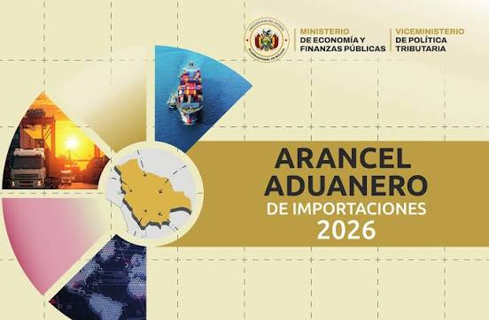
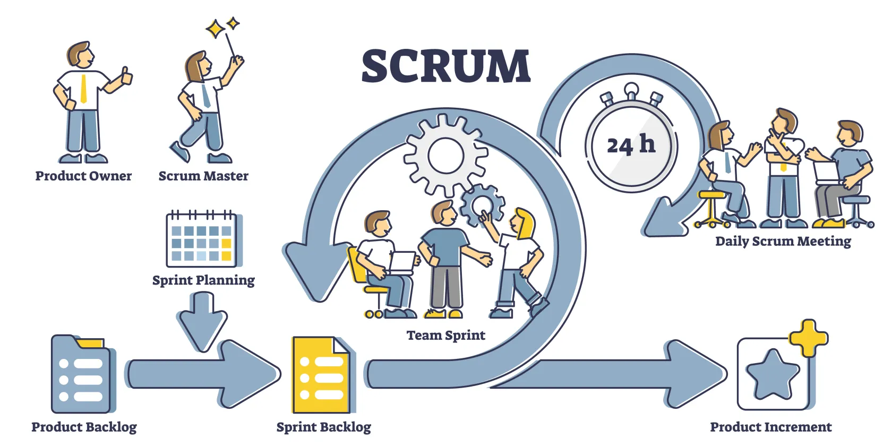
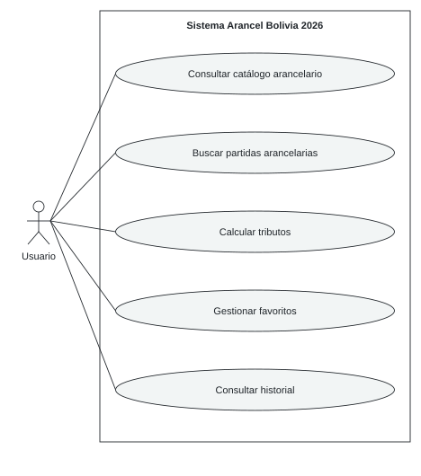
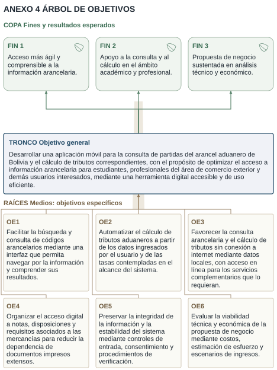
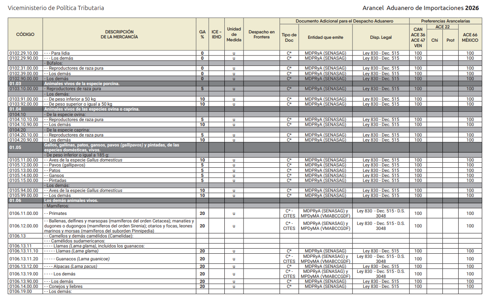

Técnica
Flutter y SQLite permiten consultar y calcular con datos locales. Las cotizaciones nuevas, la descarga inicial de PDF y los envíos a la nube requieren internet.
Una aplicación móvil para consultar partidas arancelarias y calcular tributos aduaneros desde el celular.

Desarrollar una aplicación móvil para la consulta de partidas del arancel aduanero de Bolivia y el cálculo de tributos correspondientes, con el propósito de optimizar el acceso a información arancelaria para estudiantes, profesionales del área de comercio exterior y demás usuarios interesados, mediante una herramienta digital accesible y de uso eficiente. (Ver Anexo 4)
Desarrollar una aplicación móvil para la consulta de partidas del arancel aduanero de Bolivia y el cálculo de tributos correspondientes, con el propósito de optimizar el acceso a información arancelaria para estudiantes, profesionales del área de comercio exterior y demás usuarios interesados, mediante una herramienta digital accesible y de uso eficiente.
Flutter y SQLite permiten consultar y calcular con datos locales. Las cotizaciones nuevas, la descarga inicial de PDF y los envíos a la nube requieren internet.
La modalidad gratuita conserva las funciones de consulta y cálculo para estudiantes y profesionales, con ayudas para comprender los términos.
La publicidad y el pago único para retirarla sostienen la propuesta de negocio, evaluada mediante escenarios de ingresos y costos.


El diagrama resume las funciones contempladas en el proyecto:
Consulta arancelaria y cálculo de tributos con publicidad. Las funciones son las mismas que en la modalidad premium.
Las mismas funciones, sin publicidad, mediante pago único. El modelo financiero utiliza un precio supuesto de Bs 25.
La única diferencia entre ambas modalidades es la presencia de publicidad.
| Destino | Monto Bs |
|---|---|
| Desembolsos únicos de apertura | 323,00 |
| Liquidez para operación y contingencia | 11.677,00 |
| Capital total propuesto | 12.000,00 |
Financiamiento previsto: Bs 7.500 de aporte propio y Bs 4.500 de apoyo familiar. La reserva es efectivo para operar, no un gasto adicional.
| Concepto | Año 1 | Año 2 | Año 3 | Año 4 | Año 5 |
|---|---|---|---|---|---|
| Ingresos | 1.509,20 | 3.660,80 | 7.220,00 | 11.508,00 | 16.296,00 |
| Egresos | 6.327,50 | 7.120,00 | 8.615,00 | 10.215,00 | 12.090,00 |
| Flujo anual | −4.818,30 | −3.459,20 | −1.395,00 | 1.293,00 | 4.206,00 |
El escenario base prevé flujo operativo positivo desde el cuarto año.
Acumulado al año 5 después de apertura: −Bs 4.496,50. VAN al 10 %: −Bs 5.115,47. Proyección antes de tributos del negocio y de remunerar el trabajo propio.
El proyecto integra conocimientos de desarrollo móvil, bases de datos y modelado de sistemas en una herramienta de consulta arancelaria.

